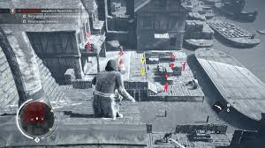

Viziunea Vulturului
Viziunea Vulturului, cunoscută și sub numele de Viziunea lui Odin de către asasinii vikingi, este o percepție extrasenzorială, sau „al șaselea simț”, care se este latentă la ființele umane ca urmare a încrucișării dintre ființele umane antice și civilizațiile Isu. Printre Isu, care deținea în mod natural acces complet la acest al șaselea sens, era cunoscut pur și simplu ca Cunoaștere. Deși fiecare om mediu are potențialul de a-l utiliza printr-un antrenament intens și foarte lung, unii indivizi rari prezintă o concentrație mai mare a genelor precursoare necesare și, prin urmare, sunt mai predispuși să prezinte în mod natural Eagle Vision, precum și unele dintre variantele sale mai avansate.

Cei care posedă darul sunt capabili să simtă instinctiv modul în care oamenii și obiectele se raportează la ei, care se manifestă ca o strălucire colorată, la fel ca o aură. Roșu indică dușmani sau sânge vărsat, albastru indică aliați, alb indică surse de informații sau locuri ascunse, iar aurul indică ținte sau obiecte de interes. Cu toate acestea, întrucât Desmond Miles nu era - cel puțin inițial - conștient de adevărata afiliere a lui Lucy Stillman la Ordinul Templier, aceasta sugerează că al șaselea sens nu este întru totul infailibil. Atunci când un individ stăpânește Viziunea, abilitatea poate evolua în "Simțul Vulturului". Această etapă crește toate simțurile utilizatorului său, permițându-le să detecteze bătăile inimii unei ținte din zonă sau chiar să prevadă calea unei ținte. Unii indivizi au dezvoltat, de asemenea, variații exotice ale darului; o aplicație care îi permite purtătorului să se uite în amintirile țintei lor imediat după ce aceștia au fost uciși, în timp ce alta a permis unui individ înzestrat să devină un fel de detector de minciuni, știind când cineva minte sau spune adevărul.